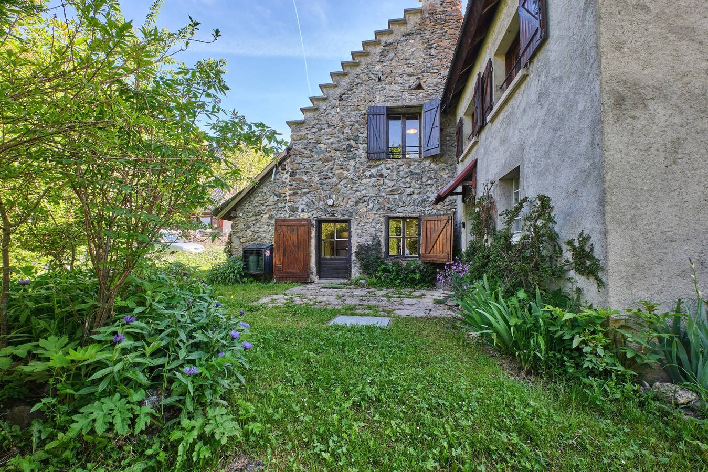

Un chalet atypique à 1368 m, à 45 min de Grenoble, aux portes de l'Oisans. En gestion libre, ouvert aux associations, collectivités, familles, jeunes et camps — toute l'année.

Le chalet est situé dans la commune de La Morte (Isère), sur la station familiale de l'Alpe du Grand Serre, à 1368 m d'altitude. Il est niché aux Portes de l'Oisans, au pied du massif du Taillefer et du Grand Serre, dans une zone naturelle protégée.
Acquis en 1963 par l'Union Locale des MJC de Grenoble, il a été pensé dès l'origine comme un lieu de séjour collectif pour les enfants, les jeunes et les groupes. Plus de 60 ans après, il continue d'accueillir des générations d'associations, de familles et de camps dans le même esprit.
📍 1407 route du Désert, 38350 La Morte — Alpe du Grand Serre
Cliquez sur une catégorie pour voir les photos en grand.
Capacité : 25 personnes adultes maximum — ou 20 mineurs de + de 6 ans accompagnés d'adultes (agrément SDJES).
⚠️ Le chalet n'est pas adapté aux personnes à mobilité réduite.
Le chalet est ouvert toute l'année, en semaine ou en week-end, pour :
Adhésion : 10 € par groupe (quel que soit le nombre de participants)
Nuitée : 289 € par nuit jusqu'à 17 personnes
Au-delà de 17 personnes : 289 € + 17 €/jour/personne supplémentaire (dans la limite de 25)
+ Taxe de séjour, uniquement pour les adultes.
Pour vérifier les disponibilités et réserver, contactez-nous directement :
La cuisine équipée du chalet vous permet de gérer vos propres repas. Vous pouvez aussi faire appel au traiteur partenaire « Verveine Citron » :
Cette prestation est proposée à titre indicatif et relève d'un prestataire extérieur, sans engagement ni responsabilité du chalet.
Office du tourisme Alpe du Grand Serre : 04 76 56 24 72 — navettes disponibles pendant la saison de ski.
Commerces en station : Vincent Sports Intersports, Sherpa Alimentation (Relais La Poste, distributeur, gaz), La Case à Skis, La Ferme du Grand Rif, Les Petits Soins de Marie, Les Typotes Vagabondes de La Morte. Restaurants et bar en station.
Voir aussi la page Activités pour les loisirs autour du chalet.